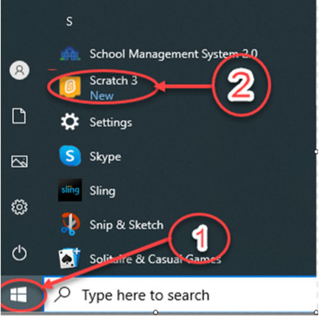
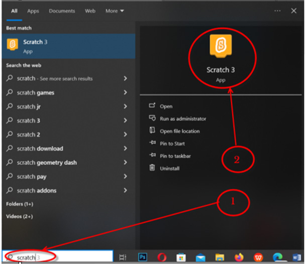

Usimbaji
Usimbaji ni kuandika maelekezo kwenye kompyuta ili kufanya kazi maalum. Katika sura hii utasimba kwa kutumia programu ya Scratch/Quorum. Programu ya Scratch/Quorum inatumia lugha ya programu ya bloku kurahisisha uundaji wa michezo sahili. Programu hii inaweza kupakuliwa kutoka https://scratch/Quorum.mit.edu/download
Kufungua programu ya Scratch/Quorum
Kwa kutumia Quorum au kisoma skrini, tumia Tab na vitufe vya mishale badala ya kuburuta; thibitisha chaguo kwa Enter.
Fuata hatua zifuatazo kufanya Kazi ya kufanya namba 4 ili kufungua programu ya Scratch/Quorum.
Kazi ya kufanya namba 5: Kufungua programu ya ‘Scratch/Quorum’
Kufungua programu ya ‘Scratch/Quorum’, fuata hatua zifuatazo:
Kufungua programu ya Scratch/Quorum tumia moja ya njia katika Kielelezo namba 18.

